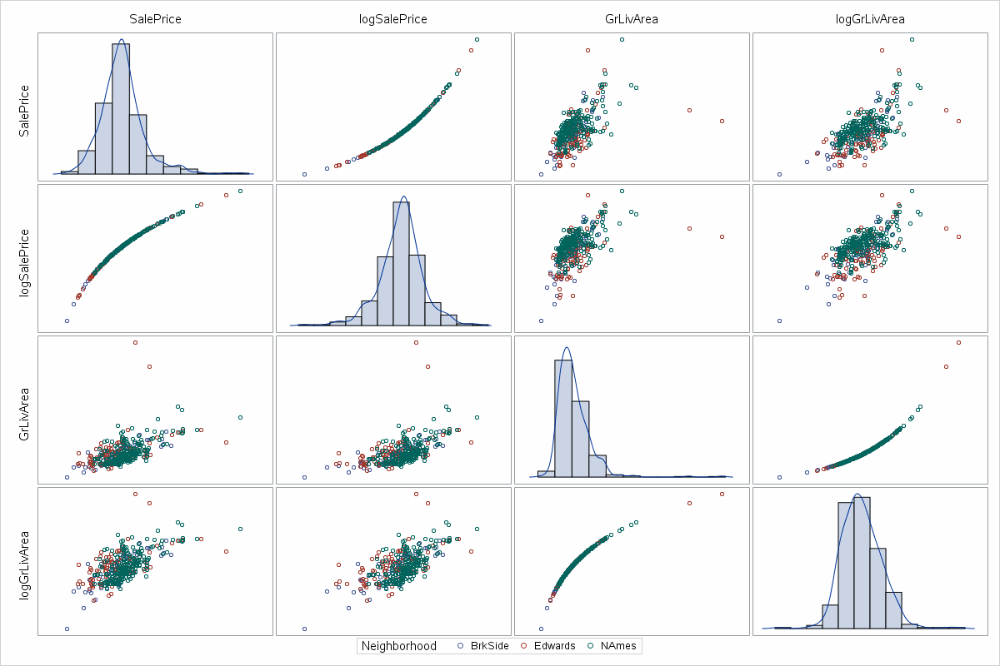
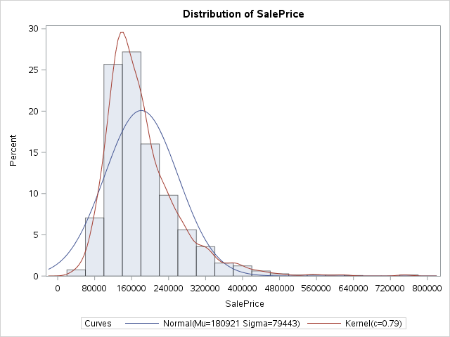
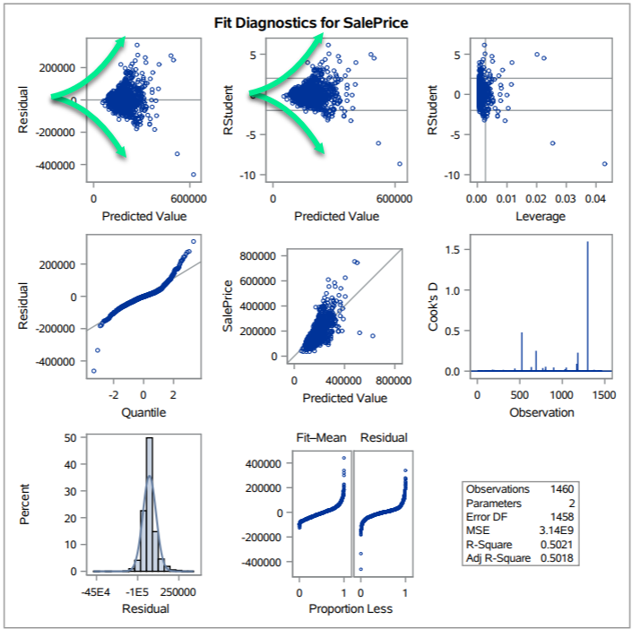

title: "Kaggle Project - Team Fat Tails" author: | | Grant Bourzikas | Quinton Nixon | Brock Friedrich date: "" output: pdf_document: df_print: kable toc: yes html_document: df_print: kable toc: true css: css/darkly.css notebook: css: css/darkly.css geometry: margin=1in
Downloading from the Kaggle API
Using SAS in Markdown Code Blocks
Find more markdown snippits
#setup, echo=FALSE, results="hide"}
# read setup script
source("Setup.R")
print("hello world!!!")
print("Verbose will be printed first")
Ask a home buyer to describe their dream house, and they probably won't begin with the height of the basement ceiling or the proximity to an east-west railroad. However, it is essential to review the data because it proves that there are many other influences in price negotiations than the number of bedrooms or a white-picket fence.
The Ames House dataset was compiled by Dean De Cock and contains 79 explanatory variables describing almost every aspect of residual home in Ames Iowa from 2006 to 2010. The data set contains 2930 observations involved in assessing home values.
To build and fit a model, an analysis must be performed to identify features of the dataset that are statistically significant in their relation to, and prediction of, the sales price.
To build and fit a model, an analysis must be performed to identify features of the dataset that are statistically significant in their relation to, and prediction of, the sales price.



Code (will move to appendix later):
proc import datafile="/home/bfriedrich0/sasuser.v94/train.csv"
out=train_original
dbms=csv
replace;
getnames=yes;
run;
proc univariate data=train_original noprint;
var SalePrice;
histogram / nrows = 5 kernel normal(noprint);
run;
Neighborhooods: $x_1 = BrkSide$ $x_2 = NAmes$ $x_3 = Edwards$
$\hat\mu { {SalesPrice} } , = , \beta_0, +, \beta_1 , \cdot , BrkSide, +, \beta_2,Edwards, +, \beta_3, \cdot , NAmes, +, \beta_4(LivingArea_{log}, \cdot, BrkSide) + \beta_{5}, x, (LivingArea_{log} , x, Edwards)$
$\mu{\widehat{SalesPrice_{Ames}}} , = , \beta_0, +, \beta_1 , x , BrkSide, +, \beta_2,Edwards, +, \beta_3, *, NAmes, +, \beta_4(LivingArea_{log}, x, BrkSide) + \beta_{5}, x, (LivingArea_{log} , x, Edwards)$